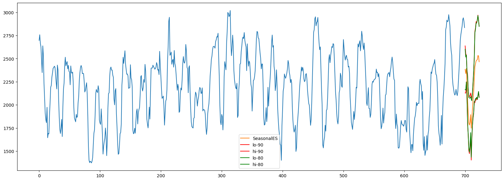

pip install statsforecast -UConformal Prediction
In this example, we’ll implement conformal prediction
Prerequisites
This tutorial assumes basic familiarity with StatsForecast. For a minimal example visit the Quick Start
Introduction
When we generate a forecast, we usually produce a single value known as the point forecast. This value, however, doesn’t tell us anything about the uncertainty associated with the forecast. To have a measure of this uncertainty, we need prediction intervals.
A prediction interval is a range of values that the forecast can take with a given probability. Hence, a 95% prediction interval should contain a range of values that include the actual future value with probability 95%. Probabilistic forecasting aims to generate the full forecast distribution. Point forecasting, on the other hand, usually returns the mean or the median or said distribution. However, in real-world scenarios, it is better to forecast not only the most probable future outcome, but many alternative outcomes as well.
The problem is that some timeseries models provide forecast distributions, but some other ones only provide point forecasts. How can we then estimate the uncertainty of predictions?
Prediction Intervals
For models that already provide the forecast distribution, check Prediction Intervals.
Conformal Prediction
For a video introduction, see the PyData Seattle presentation.
Multi-quantile losses and statistical models can provide provide prediction intervals, but the problem is that these are uncalibrated, meaning that the actual frequency of observations falling within the interval does not align with the confidence level associated with it. For example, a calibrated 95% prediction interval should contain the true value 95% of the time in repeated sampling. An uncalibrated 95% prediction interval, on the other hand, might contain the true value only 80% of the time, or perhaps 99% of the time. In the first case, the interval is too narrow and underestimates the uncertainty, while in the second case, it is too wide and overestimates the uncertainty.
Statistical methods also assume normality. Here, we talk about another method called conformal prediction that doesn’t require any distributional assumptions. More information on the approach can be found in this repo owned by Valery Manokhin.
Conformal prediction intervals use cross-validation on a point forecaster model to generate the intervals. This means that no prior probabilities are needed, and the output is well-calibrated. No additional training is needed, and the model is treated as a black box. The approach is compatible with any model.
Statsforecast now supports Conformal Prediction on all available models.
Install libraries
We assume that you have StatsForecast already installed. If not, check this guide for instructions on how to install StatsForecast
Install the necessary packages using pip install statsforecast
Load and explore the data
For this example, we’ll use the hourly dataset from the M4 Competition. We first need to download the data from a URL and then load it as a pandas dataframe. Notice that we’ll load the train and the test data separately. We’ll also rename the y column of the test data as y_test.
import pandas as pd
train = pd.read_csv('https://auto-arima-results.s3.amazonaws.com/M4-Hourly.csv')
test = pd.read_csv('https://auto-arima-results.s3.amazonaws.com/M4-Hourly-test.csv').rename(columns={'y': 'y_test'})train.head()| unique_id | ds | y | |
|---|---|---|---|
| 0 | H1 | 1 | 605.0 |
| 1 | H1 | 2 | 586.0 |
| 2 | H1 | 3 | 586.0 |
| 3 | H1 | 4 | 559.0 |
| 4 | H1 | 5 | 511.0 |
Since the goal of this notebook is to generate prediction intervals, we’ll only use the first 8 series of the dataset to reduce the total computational time.
n_series = 8
uids = train['unique_id'].unique()[:n_series] # select first n_series of the dataset
train = train.query('unique_id in @uids')
test = test.query('unique_id in @uids')We can plot these series using the statsforecast.plot method from the StatsForecast class. This method has multiple parameters, and the required ones to generate the plots in this notebook are explained below.
df: Apandasdataframe with columns [unique_id,ds,y].forecasts_df: Apandasdataframe with columns [unique_id,ds] and models.plot_random: bool =True. Plots the time series randomly.models: List[str]. A list with the models we want to plot.level: List[float]. A list with the prediction intervals we want to plot.engine: str =matplotlib. It can also bematplotlib.plotlygenerates interactive plots, whilematplotlibgenerates static plots.
from statsforecast import StatsForecast
StatsForecast.plot(train, test, plot_random = False, engine = 'plotly')Unable to display output for mime type(s): application/vnd.plotly.v1+jsonTrain models
StatsForecast can train multiple models on different time series efficiently. Most of these models can generate a probabilistic forecast, which means that they can produce both point forecasts and prediction intervals.
For this example, we’ll use SimpleExponentialSmoothing and ADIDA which do not provide a prediction interval natively. Thus, it makes sense to use Conformal Prediction to generate the prediction interval.
We’ll also show using it with ARIMA to provide prediction intervals that don’t assume normality.
To use these models, we first need to import them from statsforecast.models and then we need to instantiate them.
from statsforecast.models import SeasonalExponentialSmoothing, ADIDA, ARIMA
from statsforecast.utils import ConformalIntervals
# Create a list of models and instantiation parameters
intervals = ConformalIntervals(h=24, n_windows=2)
models = [
SeasonalExponentialSmoothing(season_length=24,alpha=0.1, prediction_intervals=intervals),
ADIDA(prediction_intervals=intervals),
ARIMA(order=(24,0,12), season_length=24, prediction_intervals=intervals),
]To instantiate a new StatsForecast object, we need the following parameters:
df: The dataframe with the training data.models: The list of models defined in the previous step.
freq: A string indicating the frequency of the data. See pandas’ available frequencies.n_jobs: An integer that indicates the number of jobs used in parallel processing. Use -1 to select all cores.
sf = StatsForecast(
df=train,
models=models,
freq='H',
)Now we’re ready to generate the forecasts and the prediction intervals. To do this, we’ll use the forecast method, which takes two arguments:
h: An integer that represent the forecasting horizon. In this case, we’ll forecast the next 24 hours.level: A list of floats with the confidence levels of the prediction intervals. For example,level=[95]means that the range of values should include the actual future value with probability 95%.
levels = [80, 90] # confidence levels of the prediction intervals
forecasts = sf.forecast(h=24, level=levels)
forecasts = forecasts.reset_index()
forecasts.head()| unique_id | ds | SeasonalES | SeasonalES-lo-90 | SeasonalES-lo-80 | SeasonalES-hi-80 | SeasonalES-hi-90 | ADIDA | ADIDA-lo-90 | ADIDA-lo-80 | ADIDA-hi-80 | ADIDA-hi-90 | ARIMA | ARIMA-lo-90 | ARIMA-lo-80 | ARIMA-hi-80 | ARIMA-hi-90 | |
|---|---|---|---|---|---|---|---|---|---|---|---|---|---|---|---|---|---|
| 0 | H1 | 701 | 624.132690 | 561.315369 | 565.365356 | 682.900024 | 686.950012 | 747.292542 | 668.049988 | 672.099976 | 822.485107 | 826.535095 | 634.355164 | 581.760376 | 585.810364 | 682.900024 | 686.950012 |
| 1 | H1 | 702 | 555.698181 | 501.886902 | 510.377441 | 601.018921 | 609.509460 | 747.292542 | 560.200012 | 570.400024 | 924.185059 | 934.385071 | 578.701355 | 540.992310 | 542.581909 | 614.820801 | 616.410400 |
| 2 | H1 | 703 | 514.403015 | 468.656036 | 471.506042 | 557.299988 | 560.150024 | 747.292542 | 546.849976 | 549.700012 | 944.885071 | 947.735107 | 544.308960 | 528.375244 | 531.132568 | 557.485352 | 560.242676 |
| 3 | H1 | 704 | 482.057892 | 438.715790 | 442.315796 | 521.799988 | 525.400024 | 747.292542 | 508.600006 | 512.200012 | 982.385071 | 985.985107 | 516.846619 | 504.739288 | 504.785309 | 528.907959 | 528.953979 |
| 4 | H1 | 705 | 460.222534 | 419.595062 | 422.745056 | 497.700012 | 500.850006 | 747.292542 | 486.149994 | 489.299988 | 1005.285095 | 1008.435059 | 502.623077 | 485.736938 | 488.473846 | 516.772339 | 519.509277 |
Plot prediction intervals
Here we’ll plot the different intervals using matplotlib for one timeseries.
import matplotlib.pyplot as plt
import numpy as np
def _plot_fcst(fcst, train, model):
fig, ax = plt.subplots(1, 1, figsize = (20,7))
plt.plot(np.arange(0, len(train['y'])), train['y'])
plt.plot(np.arange(len(train['y']), len(train['y']) + 24), fcst[model], label=model)
plt.plot(np.arange(len(train['y']), len(train['y']) + 24), fcst[f'{model}-lo-90'], color = 'r', label='lo-90')
plt.plot(np.arange(len(train['y']), len(train['y']) + 24), fcst[f'{model}-hi-90'], color = 'r', label='hi-90')
plt.plot(np.arange(len(train['y']), len(train['y']) + 24), fcst[f'{model}-lo-80'], color = 'g', label='lo-80')
plt.plot(np.arange(len(train['y']), len(train['y']) + 24), fcst[f'{model}-hi-80'], color = 'g', label='hi-80')
plt.legend()id = "H105"
temp_train = train.loc[train['unique_id'] == id]
temp_forecast = forecasts.loc[forecasts['unique_id'] == id]The prediction interval with the SeasonalExponentialSmoothing seen below. Even if the model generates a point forecast, we are able to get a prediction interval. The 80% prediction interval does not cross the 90% prediction interval, which is a sign that the intervals are calibrated.
_plot_fcst(temp_forecast, temp_train, "SeasonalES")
For weaker fitting models, the conformal prediction interval can be larger. A better model corresponds to a narrower interval.
_plot_fcst(temp_forecast, temp_train,"ADIDA")
ARIMA is an example of a model that provides a forecast distribution, but we can still use conformal prediction to generate the prediction interval. As mentioned earlier, this method has the benefit of not assuming normality.
_plot_fcst(temp_forecast, temp_train,"ARIMA")
StatsForecast Object
Alternatively, the prediction interval can be defined on the StatsForecast object. This will apply to all models that don’t have the prediction_intervals defined.
from statsforecast.models import SimpleExponentialSmoothing, ADIDA
from statsforecast.utils import ConformalIntervals
from statsforecast import StatsForecast
models = [
SimpleExponentialSmoothing(alpha=0.1),
ADIDA()
]
res = StatsForecast(
df=train,
models=models,
freq='H').forecast(h=24, prediction_intervals=ConformalIntervals(h=24, n_windows=2), level=[80])
res.head().reset_index()| unique_id | ds | SES | SES-lo-80 | SES-hi-80 | ADIDA | ADIDA-lo-80 | ADIDA-hi-80 | |
|---|---|---|---|---|---|---|---|---|
| 0 | H1 | 701 | 742.669067 | 672.099976 | 813.238159 | 747.292542 | 672.099976 | 822.485107 |
| 1 | H1 | 702 | 742.669067 | 570.400024 | 914.938110 | 747.292542 | 570.400024 | 924.185059 |
| 2 | H1 | 703 | 742.669067 | 549.700012 | 935.638123 | 747.292542 | 549.700012 | 944.885071 |
| 3 | H1 | 704 | 742.669067 | 512.200012 | 973.138123 | 747.292542 | 512.200012 | 982.385071 |
| 4 | H1 | 705 | 742.669067 | 489.299988 | 996.038147 | 747.292542 | 489.299988 | 1005.285095 |
Future work
Conformal prediction has become a powerful framework for uncertainty quantification, providing well-calibrated prediction intervals without making any distributional assumptions. Its use has surged in both academia and industry over the past few years. We’ll continue working on it, and future tutorials may include:
- Exploring larger datasets
- Incorporating industry-specific examples
- Investigating specialized methods like the jackknife+ that are closely related to conformal prediction (for details on the jackknife+ see here).
If you’re interested in any of these, or in any other related topic, please let us know by opening an issue on GitHub
Acknowledgements
We would like to thank Kevin Kho for writing this tutorial, and Valeriy Manokhin for his expertise on conformal prediction, as well as for promoting this work.
References
Manokhin, Valery. (2022). Machine Learning for Probabilistic Prediction. 10.5281/zenodo.6727505.
Give us a ⭐ on Github